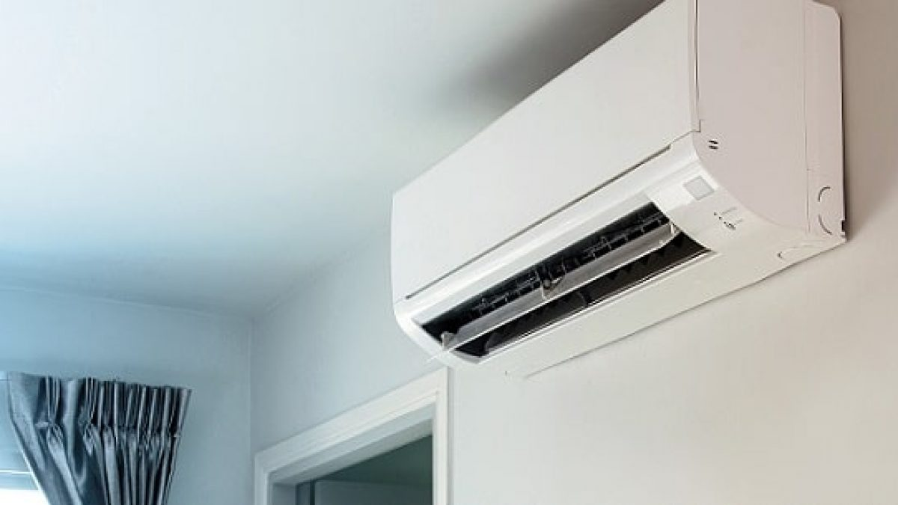
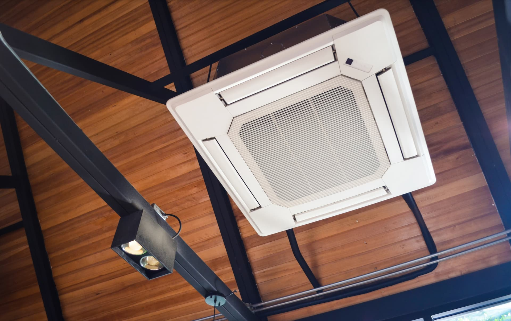
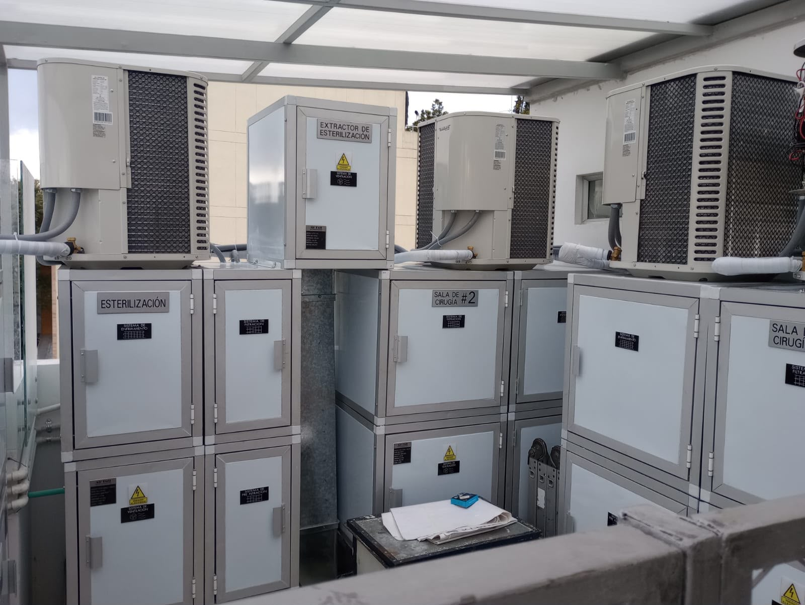
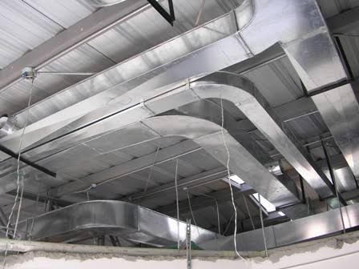
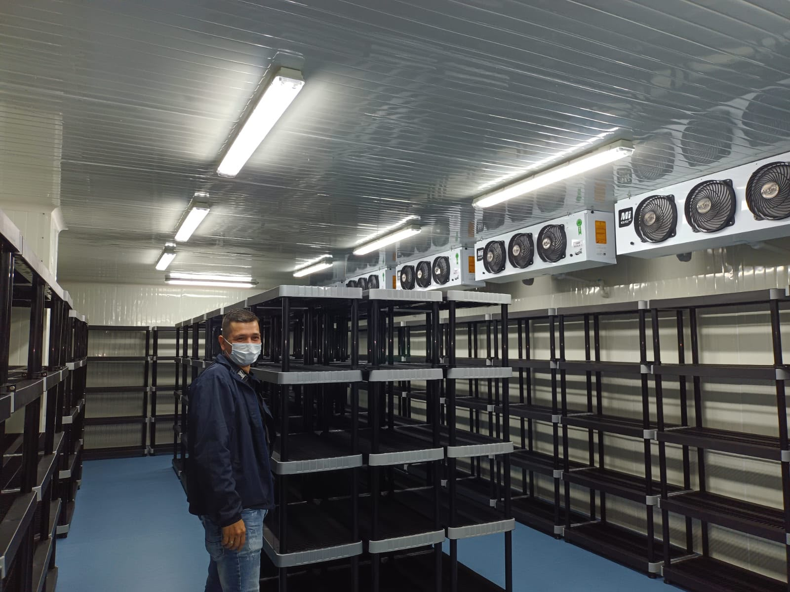

Mini split Mini split Proyectos realizados con sistemas de climatización mini split.
Cassette Cassette Proyectos realizados con equipos tipo cassette. Piso techo
Piso techo
Proyectos realizados con sistemas piso techo.
Piso techo
Piso techo
Proyectos realizados con sistemas piso techo.

Hospitalarios Hospitalarios Soluciones de climatización para espacios hospitalarios.
Centrales de ductos Centrales de ductos Proyectos de climatización con sistemas centrales por ductos.
Cuartos fríos Cuartos fríos Soluciones de refrigeración para conservación en cuartos fríos.